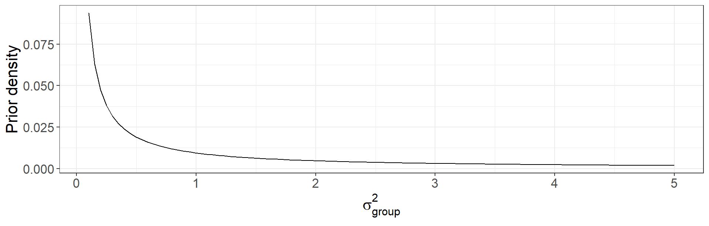
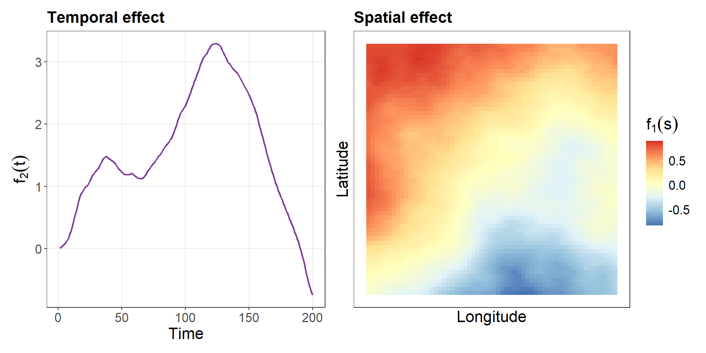
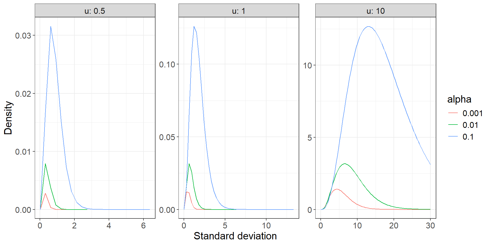

ABM Day 3
Lecture 1: Recap, Latent Gaussian Models and INLA(bru)
Lionel Hertzog
What we saw so far
- Day 1: fundamentals of Bayesian Data Analysis
- Day 1: extension of regression models in BDA: mixed-effect models and regularization
- Day 2: Bayesian Model Averaging
What we will see today
- Introduction to Latent Gaussian Models and inlabru (now)
- Adding temporal structure in models (later this morning)
- Adding spatial structure in models (after lunch break)
Latent Gaussian Models - what we already now
Let’s start from a simple random-effect model as already seen on Day 1:
\[ y_{ij} = \underbrace{\beta_0 + \beta_1 * X_i}_{\substack{\text{fixed} \\ \text{effects}}} + \underbrace{u_j}_{\substack{\text{random} \\ \text{intercept}}} + \underbrace{\epsilon_i}_{\text{residuals}} \] With
\[ u_j \sim \mathcal{N}(0, \sigma_u²); \epsilon_i \sim \mathcal{N}(0, \sigma_{\epsilon}²) \]
Latent Gaussian Models - what we already now
We can slightly rewrite this model with the following:
\[ y_{ij} \sim \mathcal{N}(\underbrace{\eta_{ij}}_{\substack{\text{linear} \\ \text{predictor}}}, \underbrace{\sigma_{\epsilon}²}_{\substack{\text{residuals} \\ \text{std. dev.}}}) \] \[ \eta_{ij} = \beta_0 + \beta_1 * X_i + u_j \] What is latent - never directly observed - in this model?
Latent Gaussian Models - A tale in three parts
LGM are made of three elements:
- Observation parts, important not necessarily Gaussian
- Latent fields, the joint Gaussian parts
- Hyperparameters, used to draw the latent fields
Latent Gaussian Models - Part 1: Observations
The first part in a Latent Gaussian Model (LGM) is the observation part, composed of a likelihood function and a linear predictor (bridge to the latent part):
| Name | Likelihood | When to use |
|---|---|---|
| Gaussian | \(y \sim \mathcal{N}(\eta, \sigma^2)\) | Continuous measurements |
| Poisson | \(y \sim \text{Poisson}(log^{-1}(\eta))\) | Count data, events |
| Binomial | \(y \sim \mathcal{B}(n, \text{logit}^{-1}(\eta))\) | Presence/absence, proportions |
Latent Gaussian Models - Part 2: the latent field
The latent field is the sum of all effects:
\[ \eta_i = \underbrace{\beta_0 + \beta_1 * X_i}_{\substack{\text{fixed} \\ \text{effects}}} + \underbrace{f_1(s_i)}_{\substack{\text{spatial} \\ \text{effect}}} + \underbrace{f_2(t_i)}_{\substack{\text{temporal} \\ \text{effect}}} + \underbrace{f_3(group_i)}_{\substack{\text{random} \\ \text{intercept}}} + ... \] Each \(f_*\) is a latent component. For example a random-intercept is defined as:
\[ f_3(group_i) \sim \mathcal{N}(0, \sigma_{group}²) \]
Latent Gaussian Models - Part 2: the latent field
All latent quantities - that can be seen as coefficients to estimate - are grouped together into one vector \(x\):
\[ x = (\beta_0, \beta_1, f_1(s_1), ..., f_1(s_n), f_2(t_1), ..., f_3(group_1), f3(group_2), ...) \]
And the \(x\) are drawn from a joint multivariate gaussian distribution:
\[ x | \theta \sim \mathcal{MVN}(\mu, Q(\theta)) \] With \(\theta\) the hyperparameters. Note that \(x\) can be a very big vector (i.e. spatial fields).
Latent Gaussian Models - Part 3: the hyperparameters
- The third and last part sets priors on the hyperparameters.
- For instance, in a random-intercept model, the latent component
\[f(\text{group}_i) \sim \mathcal{N}(0, \sigma_{\text{group}}^2)\]
has one hyperparameter \(\sigma_{\text{group}}^2\).
We can set a prior on this hyperparameter:
\[\sigma_{\text{group}}^2 \sim \text{Gamma}(0.01,\, 0.01)\]
The general intuition
In the framework of LGM, space and/or time components are just additional latent fields to estimate.

INLA
To fit these models we will rely on the package INLA because:
- It is a Bayesian approach - remember priors, posteriors […]
- It is fast - no MCMC procedure, but based on numerical approximation
- It implements numerous options for temporal / spatial models
inlabru vs INLA
- inlabru is a high-level interface built on top of INLA.
- everything that is possible in INLA is possible in inlabru but not inversely (i.e. LGCP models)
- inlabru implements some classical methods to do post-processing work on models

inlabru basics
The classical model syntax for a mixed-effect model in R is:
In inlabru the same model is written slightly differently:
inlabru basics
More generally the formula syntax of inlabru is:
Where latent1 and latent2 are arbitrary names given by the user (it can be anything), and the model is one from the list of:
Section [latent]
2diid (This model is obsolute)
ar Auto-regressive model of order p (AR(p))
ar1 Auto-regressive model of order 1 (AR(1))
ar1c Auto-regressive model of order 1 w/covariates
besag The Besag area model (CAR-model)
besag2 The shared Besag model
besagproper A proper version of the Besag model
besagproper2 An alternative proper version of the Besag model
bym The BYM-model (Besag-York-Mollier model)
bym2 The BYM-model with the PC priors
cgeneric Generic latent model specified using C
clinear Constrained linear effect
copy Create a copy of a model component
crw2 Exact solution to the random walk of order 2
dmatern Dense Matern field
fgn Fractional Gaussian noise model
fgn2 Fractional Gaussian noise model (alt 2)
generic A generic model
generic0 A generic model (type 0)
generic1 A generic model (type 1)
generic2 A generic model (type 2)
generic3 A generic model (type 3)
iid Gaussian random effects in dim=1
iid1d Gaussian random effect in dim=1 with Wishart prior
iid2d Gaussian random effect in dim=2 with Wishart prior
iid3d Gaussian random effect in dim=3 with Wishart prior
iid4d Gaussian random effect in dim=4 with Wishart prior
iid5d Gaussian random effect in dim=5 with Wishart prior
iidkd Gaussian random effect in dim=k with Wishart prior
intslope Intecept-slope model with Wishart-prior
linear Alternative interface to an fixed effect
log1exp A nonlinear model of a covariate
logdist A nonlinear model of a covariate
matern2d Matern covariance function on a regular grid
meb Berkson measurement error model
mec Classical measurement error model
ou The Ornstein-Uhlenbeck process
revsigm Reverse sigmoidal effect of a covariate
rgeneric Generic latent model specified using R
rw1 Random walk of order 1
rw2 Random walk of order 2
rw2d Thin-plate spline model
rw2diid Thin-plate spline with iid noise
scopy Create a scopy of a model component
seasonal Seasonal model for time series
sigm Sigmoidal effect of a covariate
slm Spatial lag model
spde A SPDE model
spde2 A SPDE2 model
spde3 A SPDE3 model
z The z-model in a classical mixed model formulationPriors in INLA(bru)
INLA offers a wide range of prior distribution, see:
Section [prior]
betacorrelation Beta prior for the correlation
dirichlet Dirichlet prior
expression: A generic prior defined using expressions
flat A constant prior
gamma Gamma prior
gaussian Gaussian prior
invalid Void prior
jeffreystdf Jeffreys prior for the doc
laplace Laplace prior
linksnintercept Skew-normal-link intercept-prior
logflat A constant prior for log(theta)
loggamma Log-Gamma prior
logiflat A constant prior for log(1/theta)
logitbeta Logit prior for a probability
logtgaussian Truncated Gaussian prior
logtnormal Truncated Normal prior
minuslogsqrtruncnormal (obsolete)
mvnorm A multivariate Normal prior
none No prior
normal Normal prior
pc Generic PC prior
pc.alphaw PC prior for alpha in Weibull
pc.ar PC prior for the AR(p) model
pc.cor0 PC prior correlation, basemodel cor=0
pc.cor1 PC prior correlation, basemodel cor=1
pc.dof PC prior for log(dof-2)
pc.egptail PC prior for the tail in the EGP likelihood
pc.fgnh PC prior for the Hurst parameter in FGN
pc.gamma PC prior for a Gamma parameter
pc.gammacount PC prior for the GammaCount likelihood
pc.gevtail PC prior for the tail in the GEV likelihood
pc.matern PC prior for the Matern SPDE
pc.mgamma PC prior for a Gamma parameter
pc.prec PC prior for log(precision)
pc.range PC prior for the range in the Matern SPDE
pc.sn PC prior for the skew-normal
pc.spde.GA (experimental)
pom #classes-dependent prior for the POM model
ref.ar Reference prior for the AR(p) model, p<=3
rprior: A R-function defining the prior
table: A generic tabulated prior
wishart1d Wishart prior dim=1
wishart2d Wishart prior dim=2
wishart3d Wishart prior dim=3
wishart4d Wishart prior dim=4
wishart5d Wishart prior dim=5
wishartkd Wishart prior Priors in INLA(bru)
Particularly interesting among these are the penalized complexity (PC) priors that penalized departure from an expected value.
In mixed-models these priors can be used for the deviation of the hierarchical terms in such a way: \[ P(\sigma_{group} > u) = \alpha \]
with \(u\) and \(\alpha\) two parameters set by the user.
Priors in INLA(bru)
Here are some examples of PC priors density distributions \(P(\sigma > u) = \alpha\) for different values of \(u\) and \(\alpha\):

Priors in inalbru
Priors can be added to each latent parts separately via the hyper argument.
Adding a PC prior for a mixed-effect models with the following \(P(\sigma > 10) = 0.01\) can be coded so:
Model outputs
inlabru version: 2.13.0
INLA version: 25.06.07
Components:
Intercept: main = linear(1), group = exchangeable(1L), replicate = iid(1L), NULL
conc: main = linear(conc), group = exchangeable(1L), replicate = iid(1L), NULL
plant_eff: main = iid(Plant), group = exchangeable(1L), replicate = iid(1L), NULL
Observation models:
Family: 'gaussian'
Tag: <No tag>
Data class: 'nfnGroupedData', 'nfGroupedData', 'groupedData', 'data.frame'
Response class: 'numeric'
Predictor: uptake ~ .
Additive/Linear: TRUE/TRUE
Used components: effects[Intercept, conc, plant_eff], latent[]
Time used:
Pre = 0.656, Running = 0.262, Post = 0.32, Total = 1.24
Fixed effects:
mean sd 0.025quant 0.5quant 0.975quant mode kld
Intercept 19.391 2.370 14.696 19.395 24.058 19.395 0
conc 0.018 0.002 0.013 0.018 0.022 0.018 0
Random effects:
Name Model
plant_eff IID model
Model hyperparameters:
mean sd 0.025quant 0.5quant
Precision for the Gaussian observations 0.029 0.005 0.020 0.028
Precision for plant_eff 0.022 0.009 0.009 0.021
0.975quant mode
Precision for the Gaussian observations 0.039 0.028
Precision for plant_eff 0.045 0.018
Marginal log-Likelihood: -313.34
is computed
Posterior summaries for the linear predictor and the fitted values are computed
(Posterior marginals needs also 'control.compute=list(return.marginals.predictor=TRUE)')Coding time
A first plunge into inlabru